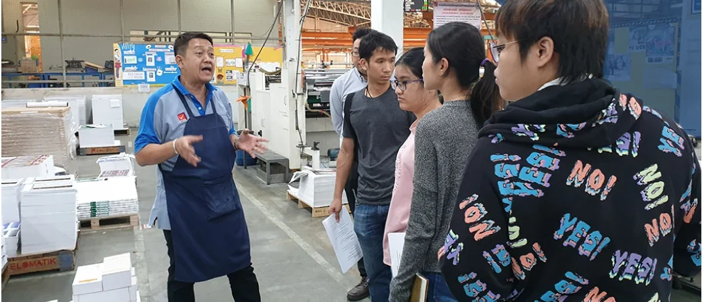

01 / Profile
Brand, packaging & design leadership.
11+ years across product design, graphic design, packaging, production and brand development, including design execution, team management and business.
SS / 01
Brand IdentityPackagingProductDesign DirectionTeam LeadershipDesign OperationsProduction
02 / Experience
From design to team management.
Each role added experience in form, production accuracy, ownership and team management. Start with the overview, then open a role for more detail.
FORMDESIGNPRODUCTIONLEADERSHIP
-
ELEMENT 26 CO., LTD. · BANGKOK
Assistant Product Designer
Furniture · Environmental Graphics · Exhibition · On-site
Responsibilities+
Designed furniture and environmental graphics for trade shows, with on-site support for installation and client coordination.
-
D.H.A. SIAMWALLA CO., LTD. · BANGKOK
Junior Graphic Designer
Artwork · Print-ready files · Suppliers · Accuracy
Responsibilities+
Prepared print-ready artwork and coordinated with suppliers to maintain production accuracy across core stationery collections.
-
D.H.A. SIAMWALLA CO., LTD. · BANGKOK
Senior Graphic Designer
Packaging · Campaigns · Marketing · Mentoring
Responsibilities+
Designed packaging and visual assets for mass and premium segments, worked with marketing on launch campaigns and supported junior designers through execution standards and print-proof reviews.
-
D.H.A. SIAMWALLA CO., LTD. · BANGKOK
Brand & Packaging Development Supervisor
Brand Development · Packaging · Team Leadership · Production
Responsibilities+
Brand & packagingManage brand direction and packaging architecture across 200+ SKUs, including KIOKU and heritage redesign programmes.
Team & workflowManage 2–3 designers using project codes, schedules, task logs and review points to track workload, ownership and performance.
Production managementWork with vendors on Flexo, Gravure and Offset production, covering materials, colour, proofing, timing and quality before mass production.
Business resultsTurn marketing objectives into design decisions that support brand value, cost and sales growth.
03 / Selected results
Proof, not promises.
Selected results from brand, packaging and production work, shown through revenue, sales and the number of SKUs managed.
+20%KIOKU revenue growth post-launch
+15%First-quarter sales after heritage redesign
200+SKUs structured within packaging systems

01 / KIOKU
Repositioning a stationery brand for a premium audience.
Developed the visual identity and packaging architecture for launch, with a consistent structure across the range for a premium market.

02 / PRODUCTION COLLABORATION
Creative direction with production involvement.
Work directly with printers and suppliers across Flexo, Gravure and Offset to align materials, colour, proofing, timing and quality.
04 / Education
Art → Design → Management
My education started with form and materials, then expanded into business strategy, finance and management.
Executive Master of Business Administration
Business strategy, finance and management applied to work in design and production.
BFA, Sculpture · Second-Class Honours
A foundation in form, proportion, materials and spatial thinking that I still use in product and packaging work.
How I work
Set priorities
Track progress
Give useful feedback
Check production
Certifications & continuing education
ISO 9001:2015 Awareness
Quality management systems for production and supplier oversight.
Generative AI for Business
Applying generative AI tools to business and creative workflows.
What I take on
Brand direction. Packaging development. Production coordination.
Projects that involve design quality, team coordination and production.
Get in touch